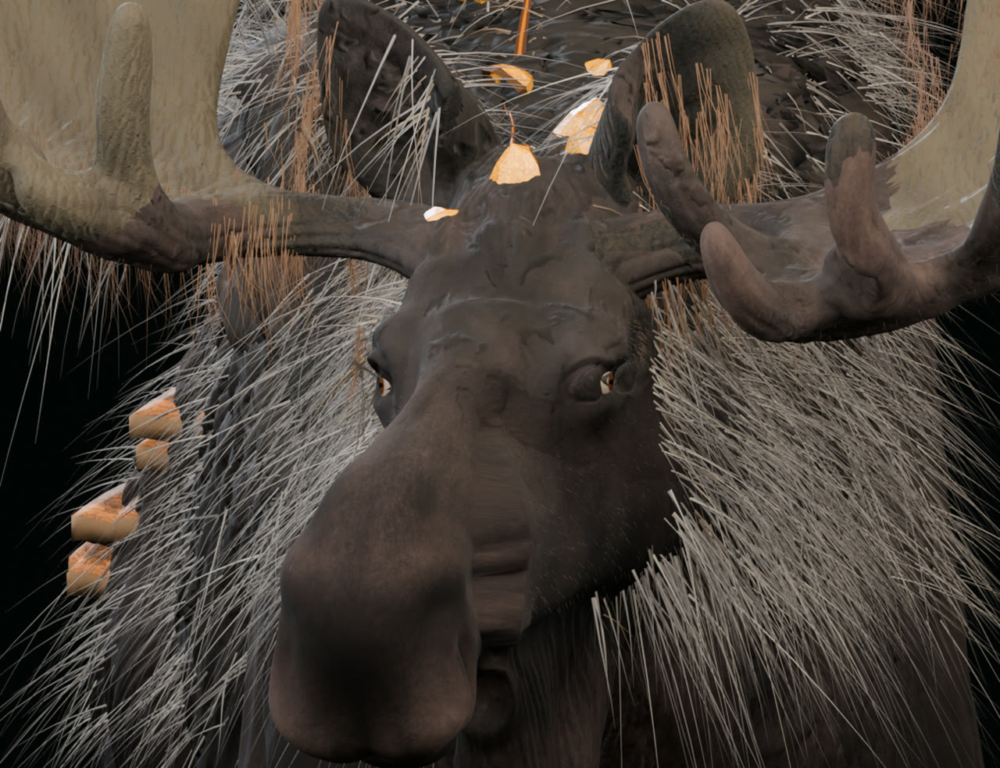

GUSTAVA ZONA 2040 / MUTANT MOOSE / BLENDER 5.2
V33C2 — новая реальная модель после правки кожи и глаз
Это не сгенерированные концепты. Новая рабочая версия построена на редактируемом Blender-исходнике V32X-B. Изменены материалы кожи, геометрия шерсти, положение обеих глазных сборок и 14 914 вершин прилегающей кожи. На лице дополнительно скульптированы повреждения и окрашены области рубцов.

Ракурсы и глаза предыдущего этапа V33B




Что действительно сохранено
Редактируемый GUSTAVA_FOREST_MOOSE_V33C2_SUBTLE_ORGANIC_SCARS_EDITABLE.blend и игровой GUSTAVA_FOREST_MOOSE_V33C2_REAL_SKIN_FUR_ALIGNED_EYES_GAME.glb на компьютере FASEA в папке REALISTIC_MUTANTS_V2\V33C_SCARRED_FACE_SURFACE_ARTPASS. GLB успешно экспортирован с тремя клипами и двумя каналами вращения глаз.
Художественная приёмка не пройдена. До 1:1 далеко. Глазницы и веки всё ещё отличаются от эталона; шерсть слишком жёсткая, кожа недостаточно скульптирована, янтарь не соответствует фотореференсу. Новые процедурные материалы и раскраска рубцов требуют полноценного PBR-запекания, прежде чем соответствие внешнего вида в Unreal Engine можно считать подтверждённым. Импорт в Unreal пока не проверен.